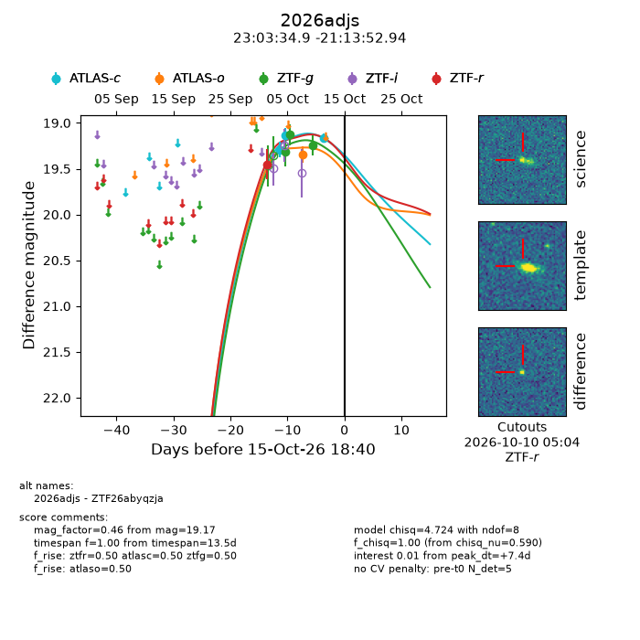
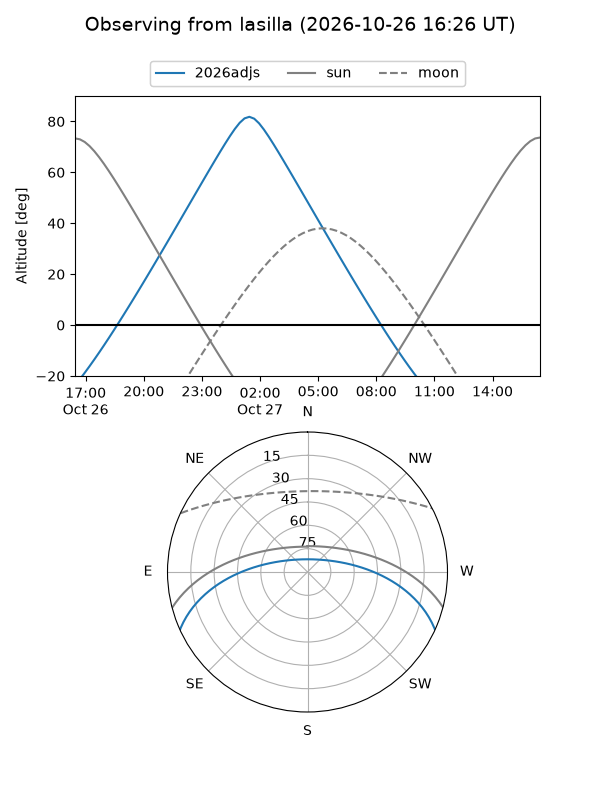
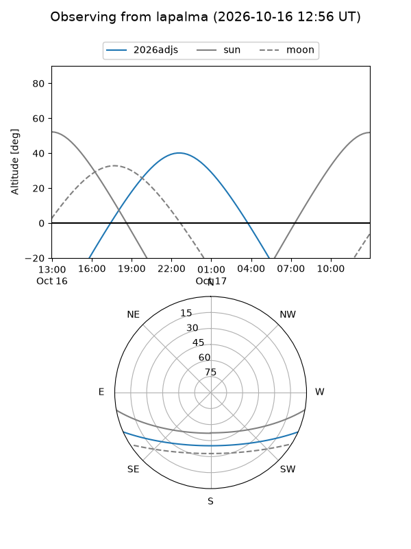
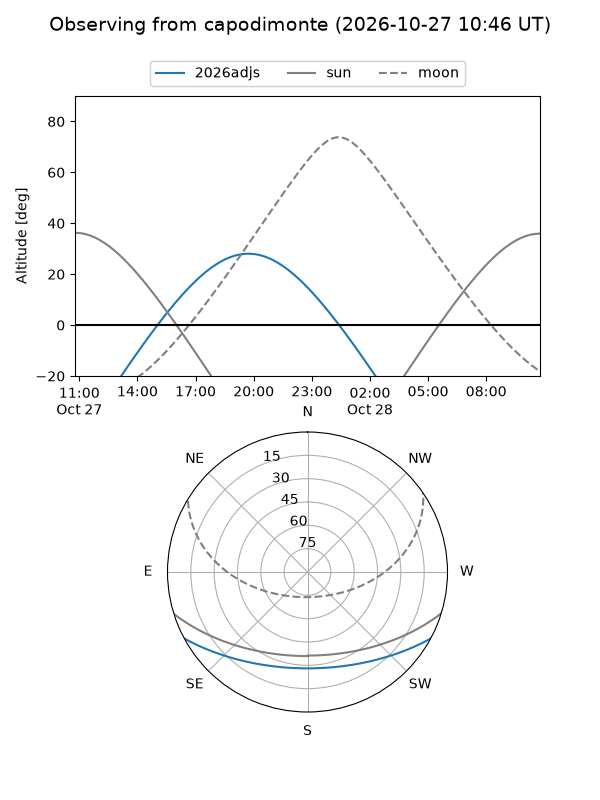
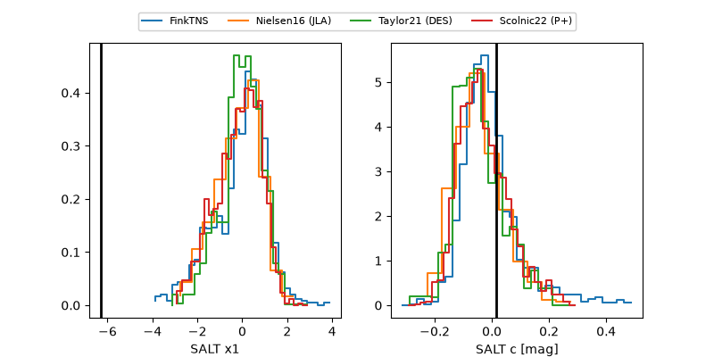

2026adjs
Target 2026adjs at 2026-10-28 03:22
Aliases and brokers:
FINK-ZTF: ztf.fink-portal.org/ZTF26abyqzja
Lasair-ZTF: lasair-ztf.lsst.ac.uk/objects/ZTF26abyqzja
ALeRCE-ZTF: alerce.online/object/ZTF26abyqzja
YSE-PZ: ziggy.ucolick.org/yse/transient_detail/2026adjs
TNS name: wis-tns.org/object/2026adjs
Direct TNS query: direct search
alt names
ZTF26abyqzja (ztf,fink_ztf)
2026adjs (tns,yse)
ATLAS26meu (atlas)
PS26jqp (panstarrs)
Coordinates:
equatorial (ra, dec) = 345.8954,-21.23121
equatorial (HMS+DMS) = 23:03:34.91,-21:13:52.35
galactic (l, b) = (40.5508,-64.75944)
Flags:
peak dt: +14.0
Photometry:
last atlasc=19.17, atlaso=19.26, ztfg=19.44, ztfr=19.14
3 atlasc, 3 atlaso, 4 ztfg, 2 ztfr detections
Lightcurve

Visibility



Additional plots
